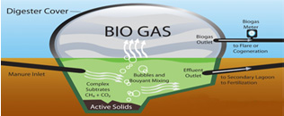
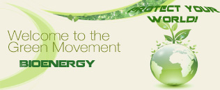

copy.jpg)
Echipa noastra
ec. Itay Mor – Manager de echipă
ing. Cristinel Popescu - Director
dr. ing. Octavian Ionescu – Manager de proiect
Camelia Rohat – Asistent Manager
ec. Itay Mor – Manager de echipă
ing. Cristinel Popescu - Director
dr. ing. Octavian Ionescu – Manager de proiect
Camelia Rohat – Asistent Manager

Digestia anaerobă este un proces biologic complex prin care substanţa organică este transformată în biogaz, constituit din metan şi anhidridă carbonică află mai multe...

Beneficii ecologice.
Biogazul nu este otravitor, prin urmare nu este periculos mediului află mai multe...
Detii deseuri de biomasa a caror gestionare te costa? Detii suprafete de teren agricol compact care pot fi lucrate? află mai multe...